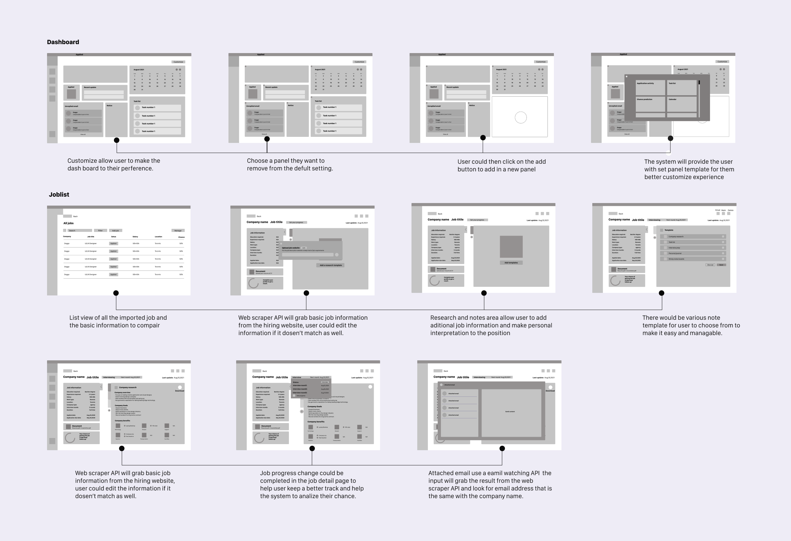

JOBCONE
A study on new grad student's job hunting journey and possible solution.
Role & Responsibilites
Phase goals
TIme: 1 Week
Design tools
Struggle are unseperable with job hunt
I was inspired to look at a possible solution to benefit first-time job seekers, I took my initiative on new grad students as my primary user group. Job hunting is tricky, and people might overlook a lot of rules. By researching their job hunting habits like planning their progress,summarizing insights and making connections. I came up with this project that will help improve their professionality and efficiency in job hunts.
Research
Interview
Two sets of interview questions were prepared for this research. One of the sets is prepared for people who are still in their job-seeking journey. I aim to identify their common application behaviour, progress, and pain points; on the other hand, the second set of questions is prepared for people who have completed their job hunt. My goals are to understand what they did and what could be improved.
Job-seeker
Employed
Interview analysis
Thruough interviewing multiple participants, I have summarized two different type of user groups.
Raider
Sniper
Insights
The exsiting solution is only a info dump most job seeker don’t find it useful.
Support for job seeker to monitor and manage their application is a missing.
Job hunter found themselves not doing enough research on the company before application
Motivation is gradually lost and self-doubt increase through the job hunting process, and becomes a obstacle.
Ideation
HMW improve the monitor and managing aspact for designer position job seeker and provide them with guidence and motivation.
Design & Testing
Test Method
The wireframe went through 2 rounds of user testing, method used
Test Fiding
Too much information on the dashboard are becoming a info dump for users.
Information in the job detail needs more improvements. Organization and structering is weak.
More call to action need to be applied to the App, the promote user to ineracte with the information.
The interface is not clean enough for user to go through, find a better method to arrange the information
don’t put all the information in one page it’s too much for users to go through at onece.
Cut out area that dosen’t needs to be it’s own page and make them into a dash/ smaller section.
Test Improvement
Cleaning up dashboard information and give user more freedom to adjust what is most improtant to them. This implimentation have reduce frustration by 40%.
Restrucureing information in the job info by sectioning. User had reflected the page are more scannable and easier to spot information.
Providing side pop-ups to high-light the update and provide quick acess, through testing 80% of the user would follow the pop up and instructions.
Combining section that share similar funcitonality, levraging their importance I came up with a much eaiser flow for 96% of my participants to complete the test.
High-fidelity design
Costomizable dash board
Strong visualization to give user reminder on important date and schedules.

Track your progress
Auto categorize for application in progress, keep your focues on the on-going progress.
Research and document job detail
Web scraping API help you auto grabs the job information, simplified research help better perparation.